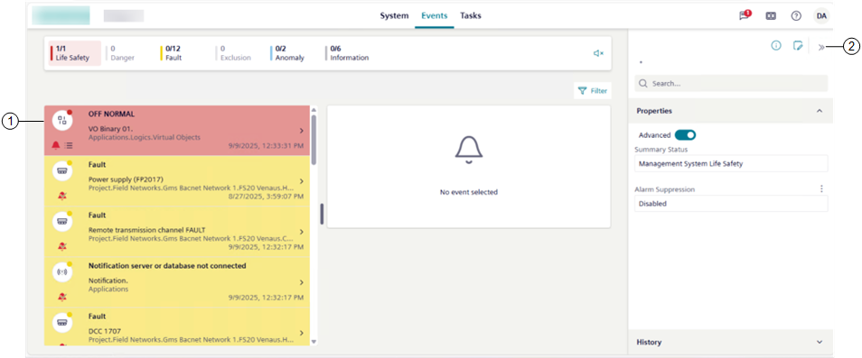

Events Workspace
When you select Events in the horizontal navigation bar, the event handling workspace displays below the Summary bar.

1 | The Events workspace consists in a single pane layout ()arranged as follows:
You can drag the splitter between the list area and the details area to adjust their size. See also Adjust Layout. |
2 | By default, the right panel is collapsed. If you select an event in the list:
Regardless of the event selection in the list, from the horizontal navigation bar, you can access additional features, among which some can display in the right panel. |
The available layouts vary depending on the browser window size or the device screen resolution (see the following table for reference).
Events Workspace Layouts | |||
|---|---|---|---|
Layout | Workspace | Screen size | Minimum width |
| Event List | 4.7” (standard smartphone devices; see Mobile Flex) | 360 pixels |
single pane | Event List | 9.7” (standard mobile devices in portrait orientation) | 577 pixels |
Event List and event details | 9.7” (standard mobile devices in landscape orientation) | 880 pixels | |
Event List columns and event details | 18’’ (large monitors) | 1758 pixels | |